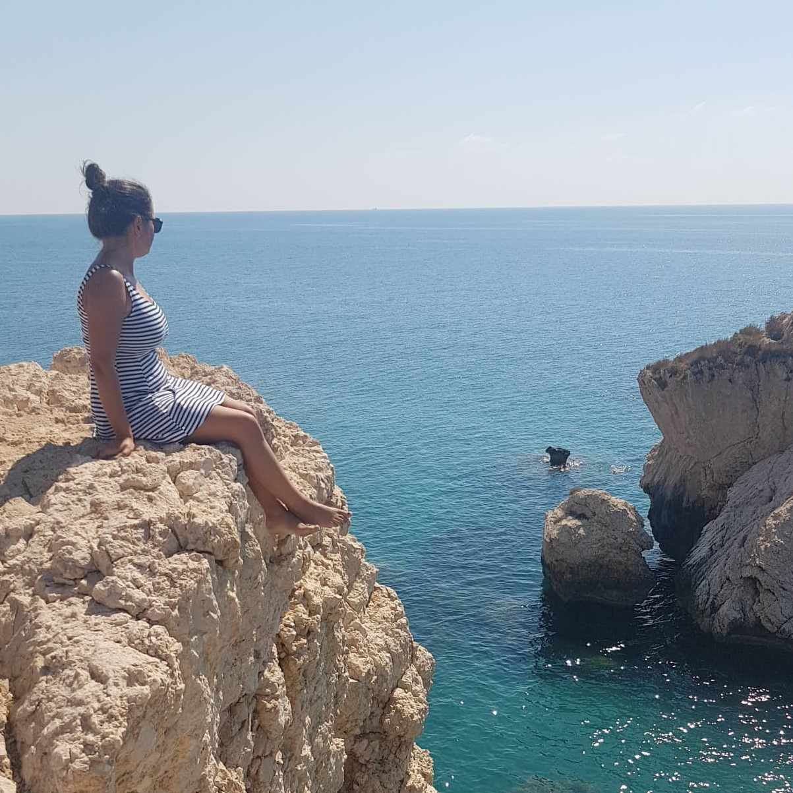

About me

- My name is Markéta.
- I come from Teplice, Czech Republic, a spa town in North-West Bohemia, close to the German borders, between Prague and Dresden.
- I was born in June 1995.
- In the beginning of 2017 I was in my third and last year of studying bachelor course of English and German for Tourism in the University of Hradec Králové, but I decided to quit school and explore the world instead.
- In April 2017, I left for Paphos, Cyprus, where I was living, working and enjoying life for all the season - eight months.
- I returned the next year, in 2018, and spent seven months there.
- I felt it’s time for a change and in January 2019 I went to live and work to the United Kingdom, which is still my location now (June 2020).
- In June 2020, as a present for my 25th birthday, I finally started this little blog, where I can put all my nonsense.
- I’ve been obsessed with writing since I learned how to hold a pen.
- I’m also obsessed with travelling.
O mně

- Jmenuju se Markéta.
- Pocházím z Teplic, lázeňského města v severozápadních Čechách, u německých hranic, mezi Prahou a Drážďanami.
- Narodila jsem se v červnu 1995.
- Na začátku roku 2017 jsem byla ve třetím a posledním ročníku bakalářského studia oboru Angličtina a němčina pro cestovní ruch na Univerzitě Hradec Králové, ale rozhodla jsem se školu ukončit a místo toho objevovat svět.
- V dubnu 2017 jsem odletěla na Paphos, na Kypr, kde jsem žila, pracovala a užívala si života celou sezonu - osm měsíců.
- Vrátila jsem se další rok, 2018, kdy jsem tam strávila sedm měsíců.
- Cítila jsem, že je čas na změnu a v lednu 2019 jsem odjela žít a pracovat do Spojeného Království, kde jsem dodnes (červen 2020).
- V červnu 2020, jako dárek ke svým 25. narozeninám, jsem konečně začala s tímhle malým blogem, kam si můžu dávat všechny svoje nesmysly.
- Jsem posedlá psaním od doby, kdy jsem se naučila, jak držet tužku.
- Jsem taky posedlá cestováním.